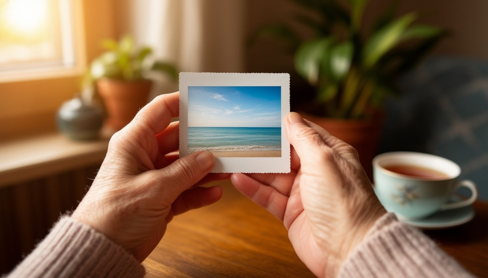

Есть один психологический факт, который переворачивает всё, что мы знаем о подарках. Через год после подарка люди помнят эмоцию — а не вещь. То есть красивая коробка, которую вы дарили, скорее всего, уже забыта. А совместная поездка, на которую вы тогда пожалели денег — до сих пор вспоминается.
Разберёмся, почему так, что считается «подарком-впечатлением» и как выбирать такой подарок, чтобы он действительно запомнился.
Почему вещи забываются
Психологи давно изучают, как работает наша память. И вывод у них простой: память хранит не предметы, а события.
Попробуйте вспомнить, что вам подарили на прошлый день рождения. Скорее всего, вы вспомните один-два предмета. Максимум — три. А теперь попробуйте вспомнить, как вы провели тот день. С кем были, что ели, как смеялись. Скорее всего, вспомните гораздо больше деталей.
Причина в том, что мозг хранит не вещи, а истории, связанные с вещами. Вещь без истории — просто предмет. Вещь с историей — уже воспоминание. И именно поэтому подарок-впечатление работает сильнее.
Что такое подарок-впечатление
Подарок-впечатление — это не вещь, а опыт, который человек получает. Причём этот опыт чаще всего связан с вами, а не с ним одним.
Примеры:
- Совместная поездка. Даже короткая — на выходные, на день, на вечер.
- Мастер-класс. Гончарное дело, кулинария, живопись, танцы. Особенно если вдвоём.
- Билеты на событие. Концерт, спектакль, выставка, матч.
- Впечатления для одного. Сертификат на прыжок с парашютом, полёт на вертолёте, спа-процедуры.
- Ужин или обед. Не «поесть», а именно событие — в красивом месте, с особенным меню.
- Фотосессия. Особенно семейная или парная.
- Поездка на природу. Пикник, поход, рыбалка.
Что у всех этих подарков общего? Они создают воспоминание, а не добавляют вещь в дом.
Почему это работает: 4 причины
Причина 1: память хранит эмоции, а не предметы. Это научный факт. Мозг запоминает то, что вызвало эмоцию. Вещи без эмоции «стираются».
Причина 2: впечатление требует участия. Когда вы дарите вещь, человек её просто получает. Когда вы дарите впечатление — он проживает его. А вложенное запоминается сильнее.
Причина 3: впечатление связано с отношениями. Если это совместный опыт — он укрепляет связь. Если одиночный — человек вспоминает вас, когда об этом рассказывает.
Причина 4: впечатление нельзя «поставить на полку». Оно живёт только в памяти. И именно поэтому оно становится историей, которую человек рассказывает другим. А рассказанная история — это уже часть его личности.
Кому подходит подарок-впечатление
Партнёру или супругу. Особенно на годовщину, на день рождения, на 14 февраля. Это подарок, который вы проживёте вместе.
Родителям. Особенно если они редко выбираются куда-то. Впечатление может стать для них настоящим событием.
Другу. Особенно если он «не любит вещи» — таких людей становится всё больше.
Коллеге или начальнику. Если отношения позволяют — билеты на что-то интересное или совместное событие.
Себе. Да, впечатление — это и подарок себе тоже. И это часто работает лучше любой покупки.
Чего стоит избегать
Как и с любым подарком, здесь есть свои подводные камни.
Не дарите то, что человеку не близко. Сертификат на прыжок с парашютом тому, кто боится высоты, — это не подарок, а стресс.
Не дарите впечатление «в одиночку» близкому. Если хотите сделать приятное партнёру, но дарите ему одиночный мастер-класс — это может читаться как «отдыхай без меня».
Не дарите впечатление «с намёком». Если человек поправится или похудеет — это не про подарок, а про критику. Это ранит.
Не дарите то, что требует подготовки. Если человеку нужно ехать через полгорода, вставать в 5 утра, что-то готовить — это уже не подарок, а задача.
Не дарите только сертификат. Просто бумажка — это не впечатление. Впечатление — когда вы вместе выбираете, планируете и идёте. Или хотя бы объясняете, почему выбрали именно это.
Как вручить подарок-впечатление
Это особая категория — потому что подарок здесь не вручается как предмет. Он проживается. И тут важны детали.
Создайте момент. Не «вот тебе сертификат», а «у меня есть идея». С интригой, с настроением.
Объясните, почему именно это. «Я выбрал это, потому что помню, как ты говорила, что мечтаешь…». Одна фраза — и подарок становится посланием.
Участвуйте. Если можете — идите вместе. Если не можете — помогите организовать. Один не идёт — другой поддерживает.
Сохраните впечатление. Сделайте фотографии, оставьте билеты, запишите видео. Это будет якорем, к которому человек вернётся через годы.
Повторите. Если впечатление зашло — сделайте это традицией. Каждый год — новое впечатление. И это станет частью вашей общей истории.
Что сказать, когда вручаете
Подарок-впечатление не требует долгих слов. Но одна фраза нужна — чтобы человек понял, что это не «просто сертификат».
«Это не вещь. Это наша история, которую мы сейчас создадим».
«Я хочу, чтобы этот день ты помнил вместе со мной».
«Хочу, чтобы ты попробовал то, о чём давно говорил».
«Это подарок, который нельзя потерять. Он всегда будет с тобой».
Одна фраза — и впечатление становится посланием.

Вместо итога
Мы живём в мире, где вещей слишком много. У каждого из нас — шкафы, полки, ящики, в которых лежит то, что мы когда-то получили. Большая часть этого — забыта. И это не потому, что подарки были плохие. А потому, что вещи — это не память.
Память — это моменты. Когда вы вместе смеялись. Когда кто-то первый раз что-то попробовал. Когда вы шли по улице и молчали, и это молчание было лучше любых слов.
Подарок-впечатление — это не отказ от вещей. Это выбор в пользу того, что нельзя положить на полку.
Моя бабушка однажды сказала: «Вещи старятся. А воспоминания — нет». Ей было 80. И у неё не осталось почти ничего из того, что она получала в подарок. Но она до последнего дня рассказывала про поездку на море — в 1972 году. Про то, как они с дедом шли по набережной. Про то, как она смеялась над чем-то глупым. И каждый раз, когда рассказывала, улыбалась так, как будто это было вчера.